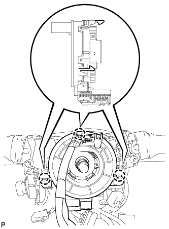

ВИТОЙ КАБЕЛЬ > СНЯТИЕ |
| 1. ОТСОЕДИНИТЕ ПРОВОД ОТ ОТРИЦАТЕЛЬНОГО ВЫВОДА АККУМУЛЯТОРНОЙ БАТАРЕИ |
| 2. СНИМИТЕ РУЛЕВОЕ КОЛЕСО В СБОРЕ |
Снимите рулевое колесо в сборе (Нажмите здесь)
| 3. СНИМИТЕ НИЖНИЙ КОЖУХ РУЛЕВОЙ КОЛОНКИ |
Для моделей с наклонной телескопической рулевой колонкой с ручным приводом:
Снимите нижний кожух рулевой колонки (Нажмите здесь).
Для моделей с наклонной телескопической рулевой колонкой с электроприводом:
Снимите нижний кожух рулевой колонки (Нажмите здесь).
| 4. СНИМИТЕ ВЕРХНИЙ КОЖУХ РУЛЕВОЙ КОЛОНКИ |
Для моделей с наклонной телескопической рулевой колонкой с ручным приводом:
Снимите верхний кожух рулевой колонки (Нажмите здесь).
Для моделей с наклонной телескопической рулевой колонкой с электроприводом:
Снимите верхний кожух рулевой колонки (Нажмите здесь).
| 5. СНИМИТЕ ВИТОЙ КАБЕЛЬ В СБОРЕ |
|  |
Отсоедините разъемы от витого кабеля.
Освободите 3 захвата и снимите витой кабель.